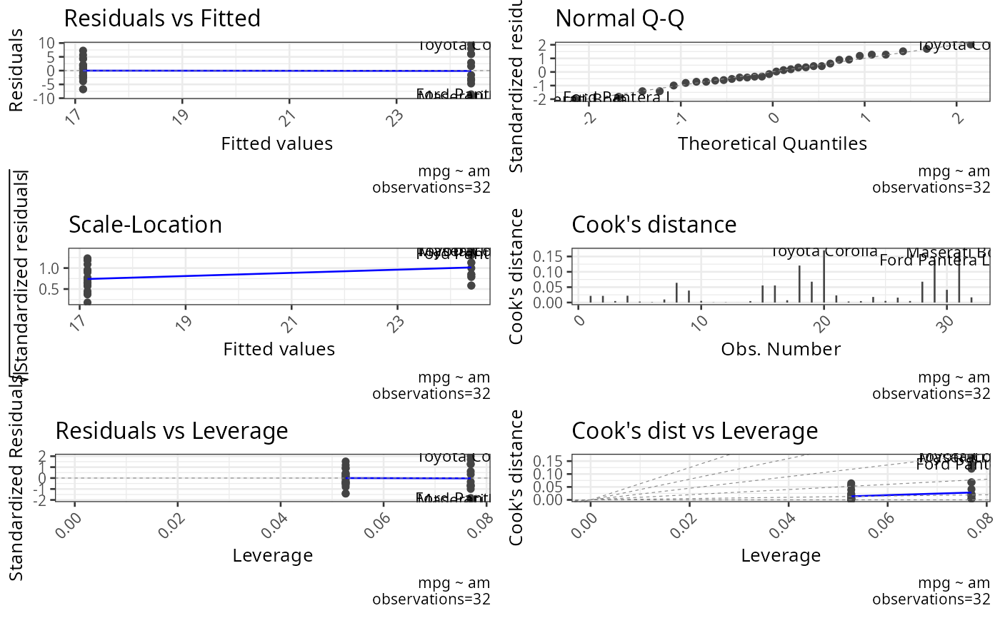
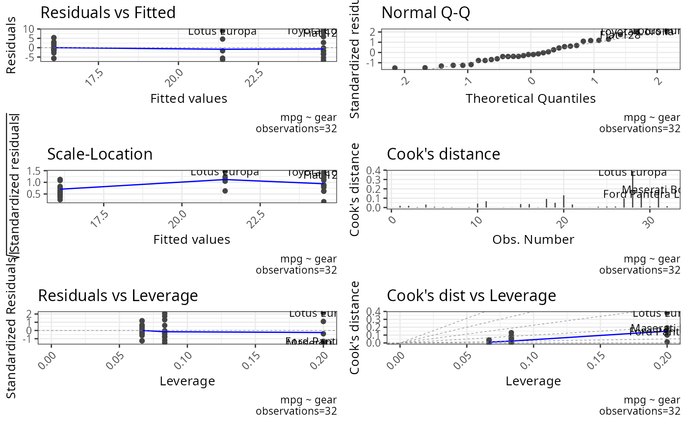

For every combination of independent variable (IV) and dependent
variable (DV), fits a linear model and produces a 6-panel diagnostic plot
via ggfortify::autoplot: Residuals vs Fitted, Normal Q-Q, Scale-Location,
Cook's Distance, Residuals vs Leverage, and Cook's Distance vs Leverage.
Interpretation:
Residuals vs Fitted — points should be randomly scattered with no pattern; a funnel shape indicates heteroscedasticity.
Normal Q-Q — points should follow the diagonal; large deviations indicate non-normality.
When the number of IV-DV combinations exceeds four times the available CPU
cores the plots are produced in parallel via future.apply, otherwise
sequentially.
Examples
nrows <- 1000
df <- data.frame(generate_factor(vector=LETTERS[1:5], nrows=nrows, ncols=10, type="random"),
generate_data(nrows=nrows, ncols=5, type="normal"))
result <- plot_oneway_diagnostics(df=df, dv=11:15, iv=1:10)
#> Warning: `fortify(<lm>)` was deprecated in ggplot2 4.0.0.
#> ℹ Please use `broom::augment(<lm>)` instead.
#> ℹ The deprecated feature was likely used in the ggfortify package.
#> Please report the issue at <https://github.com/sinhrks/ggfortify/issues>.
#> Warning: `aes_string()` was deprecated in ggplot2 3.0.0.
#> ℹ Please use tidy evaluation idioms with `aes()`.
#> ℹ See also `vignette("ggplot2-in-packages")` for more information.
#> ℹ The deprecated feature was likely used in the ggfortify package.
#> Please report the issue at <https://github.com/sinhrks/ggfortify/issues>.
# Single DV, multiple IVs
plot_oneway_diagnostics(df=mtcars, dv=1, iv=9:10)
#> $am_mpg
 #>
#> $gear_mpg
#>
#> $gear_mpg
 #>
# Multiple DVs and IVs
plot_oneway_diagnostics(df=mtcars, dv=1:2, iv=9:10)
#> $am_mpg
#>
# Multiple DVs and IVs
plot_oneway_diagnostics(df=mtcars, dv=1:2, iv=9:10)
#> $am_mpg

#>
#> $gear_mpg

#>
#> $am_cyl
 #>
#> $gear_cyl
#>
#> $gear_cyl
 #>
#>